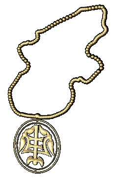

|
Обработка цветных металлов |
|
| Литейное дело было
основной отраслью обработки цветных металлов.
Кроме литья широко применялась ковка, чеканка,
прокатка и волочение, гравировка и тиснение,
штамповка, чернение, наведение золотом и
инкрустация металлами. Ремесленники по обработке цветных металлов изготовлмвали в XII веке огромное количество самых разнообразных украшений и принадлежностей костюмов, церковной утвари, декоративной и столовой посуды, конской сбруи и украшений для оружия. Поскольку Русь собственных цветных металлов не имела, их привозили из стран Западной Европы и с Востока. В XII веке широкое распространение получила техника литья в каменные формы. Появляется литье в имитационные формы и новая технология литья «навыплеск», которая заменяла такие трудоемкие и сложные операции, как тиснение, филигрань и зернь. Одной из самых сложных технологических операций было изготовление проволоки. Существовали два основных способа ее производства: ковка и волочение. Процесс волочения заключается в том, что предварительно прокатанный в тонкий длинный брусок металл протаскивался сначала через одно крупное, а затем и через более мелкие отверстия. Искусные ювелиры этого века изготавливали длинные цепочки-украшения, сплетенные из тончайших проволочек диаметром 0,1 мм. Изготовление таких цепочек требовало огромного мастерства, поскольку механические операции волочения должны были постоянно перемежаться с термической обработкой проволоки. |
|
Текст и
иллюстрации (c) 1997 Snowball Interactive Entertainment, Inc. |